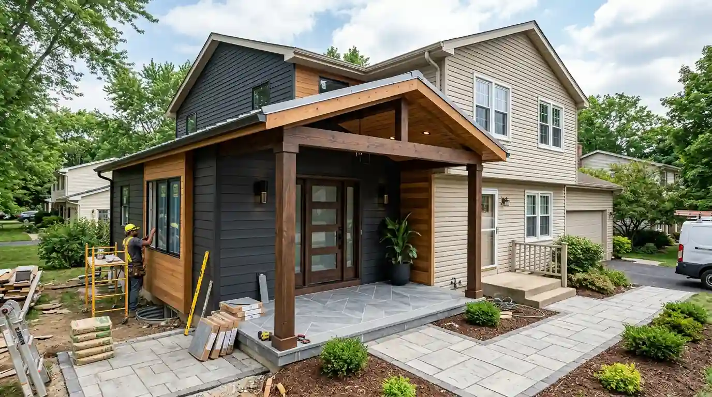

Mengapa Memilih Jasa Bangun Rumah Custom Desain Gratis Menghemat Anggaran Anda?
Jasa bangun rumah custom desain gratis menghemat anggaran hingga 25% melalui optimalisasi efisiensi struktur, eliminasi biaya jasa desain terpisah, dan pencegahan bongkar-pasang material di lapangan.
Banyak pemilik lahan enggan berkonsultasi ke kantor arsitek profesional karena khawatir dibebani biaya perencanaan ratusan ribu rupiah per meter persegi sebelum proyek dimulai. Akibatnya, mereka langsung mempekerjakan mandor borongan lepas hanya dengan modal sketsa kasar di atas kertas. Praktik ini kerap berujung petaka: dimensi kolom terlalu boros beton atau sebaliknya kurang kuat, pipa plumbing bertabrakan dengan balok struktur, serta pemborosan potongan keramik dan baja ringan.
Studi empiris dari Institut Konstruksi dan Properti Indonesia (Laporan Efisiensi Biaya Konstruksi Residensial 2025) mengungkapkan bahwa 73% proyek bangun rumah mandiri tanpa gambar kerja arsitektur matang mengalami pembengkakan anggaran (budget blow-out) minimal 28,5% dari target awal akibat pekerjaan bongkar ulang (rework).
Melalui skema paket bangun rumah custom terpadu di Kontraktor Bangunan, seluruh paket perencanaan desain arsitektur 3D eksterior-interior, perhitungan gambar kerja struktur teknis (DED), hingga dokumen Rencana Anggaran Biaya (RAB) diberikan 100% GRATIS (free design fee) saat Anda mempercayakan pelaksanaan pembangunannya kepada kami.
Bagaimana Alur Mewujudkan Kontraktor Rumah Desain Sendiri dari Denah ke Fisik Bangunan?
Alur mewujudkan kontraktor rumah desain sendiri mencakup 5 tahapan sistematis: survei lahan, perumusan konsep 3D, penyusunan RAB & SPK, eksekusi konstruksi, serta serah terima kunci bergaransi.
Membangun hunian custom bersama tim profesional berlangsung secara terstruktur tanpa membuat Anda repot memikirkan teknis harian tukang di lokasi:
- Langkah 1 (Survei Lahan & Diskusi Kebutuhan): Pengukuran batas lahan, tes daya dukung tanah (sondir test jika diperlukan), dan pemetaan posisi matahari serta arah angin.
- Langkah 2 (Pengembangan Desain Arsitektur & 3D): Penerjemahan denah impian ke dalam visualisasi render 3D fotorealistik tampak depan, samping, dan tata ruang dalam.
- Langkah 3 (Penyusunan Gambar Kerja DED & RAB Final): Penyusunan lembar teknis pembesian, instalasi MEP (listrik & sanitasi), serta tabel RAB detail per item pekerjaan.
- Langkah 4 (Penandatanganan SPK & Eksekusi Konstruksi): Pelaksanaan pembangunan di bawah supervisi Site Engineer dengan laporan progres berkala mingguan (foto & kurva S).
- Langkah 5 (Serah Terima Pertama & Masa Retensi): Penyerahan kunci rumah siap huni, dokumen sertifikat garansi struktur, serta masa pemeliharaan gratis.
Apa Saja Komponen Penting Saat Bangun Rumah Sesuai Denah Pribadi dan Gambar Kerja?
Komponen penting saat bangun rumah sesuai denah pribadi meliputi zonasi ruang privat-publik, integrasi MEP (Mekanikal Elektrikal Plumbing), dan perhitungan dimensi pondasi sesuai beban struktur.
Merancang denah sendiri sering kali mengabaikan aspek fungsionalitas mikroklimat dan efisiensi modul material. Misalnya, meletakkan kamar tidur utama tepat di sisi barat tanpa perlindungan secondary skin akan membuat ruangan terasa panas hingga malam hari. Insinyur dan arsitek kami akan menyempurnakan denah dasar Anda agar memenuhi standar sirkulasi udara silang (cross-ventilation) dan pencahayaan alami tanpa menghilangkan esensi konsep pribadi Anda.
| Aspek Konstruksi | Tukang Borongan Lepas / Tanpa Gambar | Kontraktor Bangunan (Custom & Presisi) |
|---|---|---|
| Dokumen Desain & Gambar Kerja | Sketsa kasar / mengira-ngira di lapangan | Paket lengkap Arsitektur 3D, DED Struktur & MEP Gratis |
| Kepastian Anggaran Biaya | Sering terjadi pembengkakan di tengah jalan | RAB Terikat & Transparan sesuai SPK berbadan hukum |
| Mutu Material yang Digunakan | Bebas diturunkan mutunya tanpa izin pemilik | 100% SNI & Brand ternama dengan spesifikasi tertulis |
| Pengawasan & Kontrol Kualitas | Hanya mandor tukang (sering luput pengawasan) | Site Engineer lulusan Teknik Sipil & Quality Control berkala |
| Jaminan & Garansi Konstruksi | Tidak ada garansi resmi (susah dihubungi pasca selesai) | Garansi Struktur hingga 10 Tahun & Sertifikat Pemeliharaan |
Data statistik dari Badan Pusat Statistik (Sensus Indeks Kualitas Perumahan Nasional 2024) menunjukkan bahwa rumah tinggal yang dibangun berbasis gambar DED lengkap memiliki usia pakai komponen struktural 2,4 kali lebih panjang sebelum membutuhkan renovasi besar dibandingkan rumah yang dibangun tanpa gambar kerja terstandarisasi.
Mengapa Transparansi Rencana Anggaran Biaya (RAB) Menjadi Kunci Sukses Proyek Custom?
Transparansi Rencana Anggaran Biaya (RAB) menjadi kunci sukses karena merinci volume satuan (m¹, m², m³), merk material, upah tukang, dan tahapan pembayaran yang mengikat kedua belah pihak.
Di Kontraktor Bangunan, dokumen RAB disusun secara terperinci menggunakan software manajemen konstruksi modern. Anda dapat membedah setiap pengeluaran hingga ke takaran sak semen, batang besi beton SNI, merk cat tembok interior/eksterior, hingga jenis saklar listrik. Transparansi ini memastikan tidak ada mark-up tersembunyi dan memungkinkan Anda menyesuaikan spesifikasi material (finishing downgrade / upgrade) agar tepat sesuai alokasi dana yang Anda miliki.

Bangunan rumah custom 2 lantai dengan konsep modern tropis hasil perpaduan denah pemilik dan eksekusi presisi tim kontraktor.
Pilihan Paket Standar Bangun Rumah Baru Kami:
- Paket Standar Minimalis (Mulai Rp 3,5 - 4,2 Juta/m²): Struktur beton K225, dinding bata ringan acian halus, lantai granit 60x60, rangka atap baja ringan, plafon gypsum, kusen aluminium 3 inch, sanitari standar merk American Standard/Toto.
- Paket Premium Tropis (Mulai Rp 4,5 - 6,0 Juta/m²): Struktur beton K250/K300, lantai homogen granite 80x80 / SPC flooring, kusen aluminium Alexindo/YKK, pintu kayu kamper oven, sanitari premium Toto, cat weathershield premium, instalasi pipa air panas terintegrasi.
- Paket Luxury Custom (Mulai Rp 6,5 Juta++/m²): Desain fasad mewah (marmer alam, smart home system, kolam renang overflow, drop ceiling arsitektural, kaca tempered 10 mm, instalasi panel surya).
Bagaimana Kontraktor Bangunan Menjamin Legalitas PBG dan Garansi Konstruksi?
Kontraktor Bangunan menjamin legalitas dengan menyediakan berkas arsitektur bertanda tangan SKA/STRA untuk penerbitan PBG serta menerbitkan polis garansi struktur resmi berbadan hukum.
Mengurus Persetujuan Bangunan Gedung (PBG) pengganti IMB sering kali terkendala karena dinas perizinan mewajibkan gambar teknis berbasis format CAD yang ditandatangani oleh arsitek dan ahli struktur bersertifikat (memiliki Sertifikat Keahlian / SKA dari LPJK). Sebagai badan usaha konstruksi resmi, tim kami melengkapi seluruh berkas administratif dan teknis yang dipersyaratkan dinas tata ruang kota Anda, sehingga proses penerbitan izin PBG Anda berjalan lancar tanpa birokrasi rumit.
Selain itu, seluruh proyek kami dilindungi oleh:
- Masa Retensi Pemeliharaan (3 - 6 Bulan): Perbaikan cuma-cuma untuk kendala minor pasca serah terima (seperti cat mengelupas, kran bocor, atau engsel pintu).
- Sertifikat Garansi Struktur (Hingga 10 Tahun): Jaminan kekuatan pondasi, kolom beton bertulang, dan plat dak beton dari risiko keretakan struktural atau penurunan tanah.
Wujudkan Hunian Impian Bersama Kontraktor Bangunan Tanpa Biaya Konsultasi Awal
Membangun rumah custom adalah pencapaian hidup yang berharga. Jangan biarkan mimpi tersebut terganggu oleh ketidakpastian biaya dan kekhawatiran mutu di lapangan.
Fasilitas Konsultasi Gratis yang Anda Dapatkan:
- Diskusi online via Video Call / WhatsApp dengan Lead Architect.
- Kunjungan survei plotting lahan langsung ke lokasi proyek.
- Pembuatan layout plan 2D awal dan estimasi kisaran anggaran kasar dalam 24 jam.
- Perhitungan RAB definitif dan presentasi desain 3D tanpa pungutan biaya muka.
Pertanyaan yang Sering Diajukan (FAQ)
Kesimpulan Praktis
Membangun rumah custom sesuai denah pribadi adalah wujud nyata ekspresi kenyamanan keluarga Anda. Dapatkan pendampingan arsitek ahli, material berkualitas SNI, transparansi biaya RAB, dan garansi konstruksi resmi bersama Kontraktor Bangunan. Mulai konsultasi gratis Anda via WhatsApp sekarang!